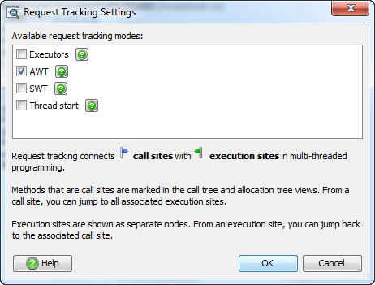
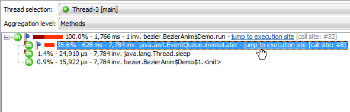
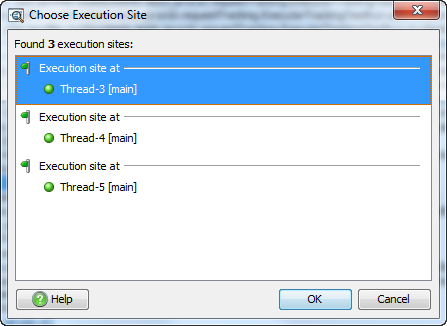
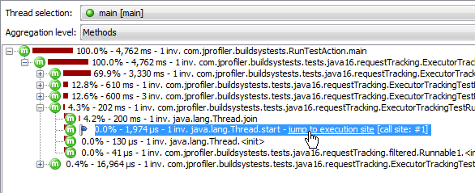
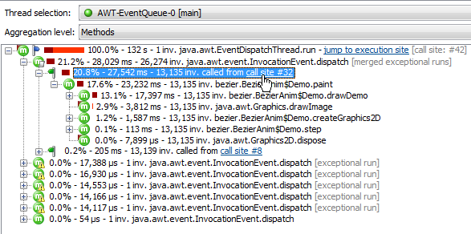

Request Tracking |
JProfiler's solution to this problem is request tracking: Call sites and execution sites in multi-threaded programming are hyperlinked in the call tree, so you can seamlessly navigate both ways.
Inter-thread communication can be implemented in various ways and the semantics of starting tasks on a separate thread cannot be detected in a generic way. JProfiler explicitly supports several common asynchronous systems. You can enable or disable them in the request tracking settings. By default, request tracking is not enabled.

The simplest way to offload a task on another thread is to start a new thread. JProfiler supports this "thread start" Request tracking type. However, threads are heavy-weight objects and are usually reused for repeated invocations, so this request tracking type is more useful for debugging purposes.
The most important and generic way to start tasks on other threads uses executors in the java.util.concurrent package.
Executors are also the basis for many higher-level third part libraries that deal with asynchronous execution.
By supporting executors, JProfiler supports a whole class of libraries that deal with multi-threaded and parallel programming.
Apart for the generic cases above, JProfiler also supports the two most popular GUI toolkits for the JVM: AWT and SWT.
Both toolkits are single-threaded, which means that there is one special event dispatch thread that can manipulate GUI widgets and
perform drawing operations. In order no to block the GUI, long-running tasks have to be performed on background threads.
However, background threads often need to update the GUI to indicate progress or completion. This is done with
special methods that schedule a Runnable to be executed on the event dispatch thread.
In GUI programming, you often have to follow multiple thread changes in order to connect cause and effect: The user initiates an action on the event dispatch thread, which in turn starts a background operation via an executor. After completion, that executor pushes an operation to the event dispatch thread. If that last operation creates a performance problem, it's two thread changes away from originating event.
A call site in JProfiler is the last profiled method call before a recorded thread change is performed. It starts a task at an execution site which is located on a different thread. If request tracking is enabled for the appropriate request tracking type, JProfiler allows you to jump from a call site to an execution site by using hyperlinks that are shown in the call tree view.

Call sites and execution sites are in a 1:n relationship. A call site can start tasks on several execution sites, such as different threads in a thread pool. If a call site calls more than one execution site, you can choose one of them in a dialog.

An execution site is a synthetic node in the call tree that contains all executions that were started by one particular call site. JProfiler allows you to jump back to the call site by using the hyperlink in the execution site node.

In principle, call sites and execution sites could be implemented in an n:m relationship. However, it is often important to separately analyze the execution site depending on the call site. For example, the same executor thread can handle tasks submitted from different methods, but they will probably be of a different nature and so merging them would not be advantageous. That's why JProfiler creates a new execution site for every call site.
However, if the same call site invokes the same execution site repeatedly, the execution site will show the merged call tree of all its invocations. If that is not desired, you can use the exceptional methods feature to split the call tree further, as shown in the screen shot below.

Because several execution sites can refer to the same call site, call sites have a numeric ID. In that way you can recognize the same call site if you see it referenced from different execution sites. Execution sites are only referenced from a single call site and so they do not need a separate ID.